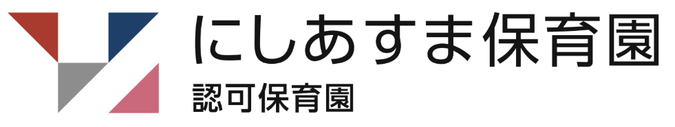

博滇会グループ保育方針
保育理念
定員90名 ※入所年齢：生後57日～就学前
延長保育時間 18：16～19：15
| 月額 | ４,０００円 |
|---|---|
| １日 | １日４００円（保育標準時間の場合） |
病児保育とは、保育施設に通所しているさいたま市在住のお子さんが、病気または病気回復期のため集団生活が困難な期間に、看護師・保育士がお子さんをお預かりする事業です。
利用時間 8:00 ～ 18:00
※電話受付は 8:00 から行っています
病児保育の詳細については、ホームページ内「病児保育」のページおよび、さいたま市の病児保育をご確認ください。
現在、休止中です

| 法人名 | 社会福祉法人 俊江会 |
|---|---|
| 理事長 | 湯澤 俊 |
| 法人設立 | 平成25年8月 |
| 施設設立 | 平成26年4月1日開園 |
| 所在地 | 〒331-0061 さいたま市西区西遊馬771-11 |
| 電話 | 048-620-7879 |
| FAX | 048-620-7880 |
| 開園時間 | 平日 7：15 ～ 19：15（18：16～19：15は延長保育） 土曜日 7：15 ～ 18：15 |
| 休園日 | 日曜日・祝祭日・年末年始（12月29日～1月3日） |
相談・苦情窓口
保育園は保護者等からの相談・苦情に迅速かつ適切に対応するために窓口を設置しています。
※令和7年度の苦情申し立てはありませんでした。
見学やご入園のこと、病児保育のことなど、お気軽にお問い合わせください。
開園時間：平日 7:15〜19:15／土曜 7:15〜18:15